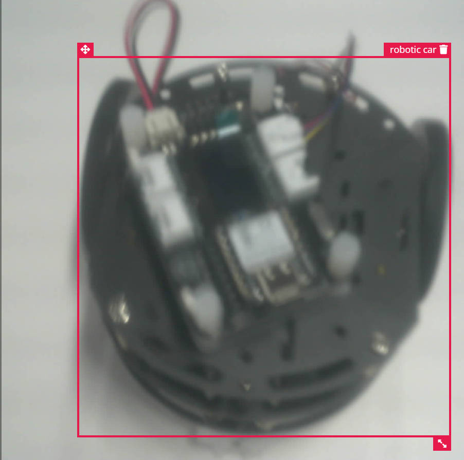
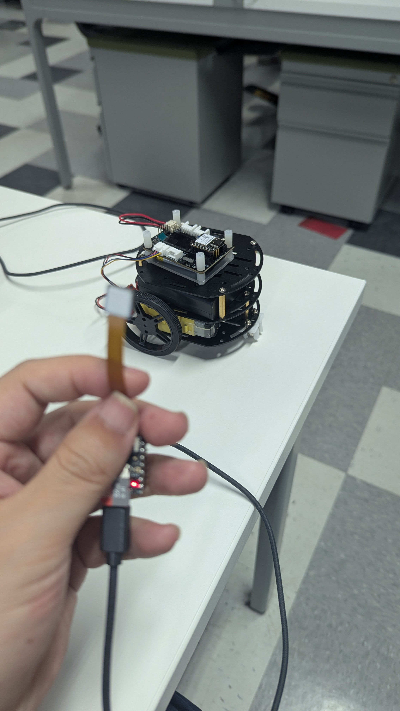
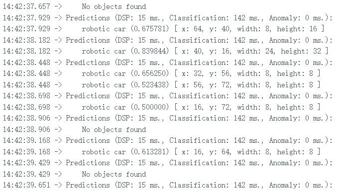

In this lab, we will be start using ESP32-S3 to add vision ability to our car, but first, we will be make sure we can have ESP32 work properly by doing the classic LED blink.
After the blink test, we start to code the ESP32 with a picture taking code to start collecting images with the car in random location of the image for later model training, we have collect 100 images with the car inside the image.

With the imaegs captured, we can train a model that will recognize our car as an object class.

From the Serial concole terminal, we can see the esp32 can detect the car with the trained model.

Using this detection model, we can get a smart traffic system that is going regularly, but when detecting cars and pedestrian, it will set priorities for different situation.
← Back to homepage